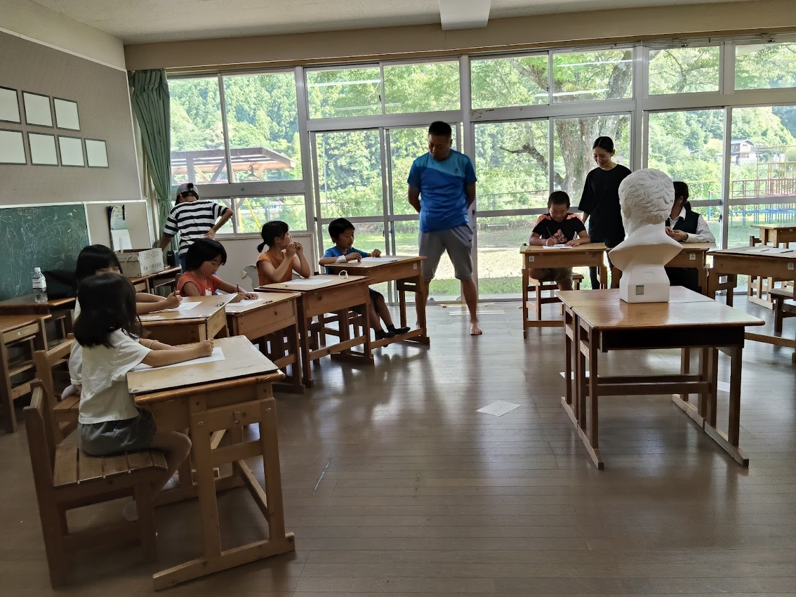
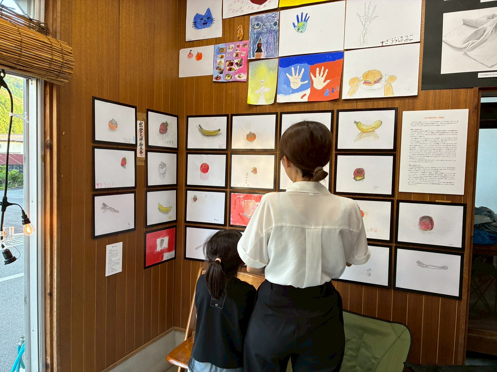
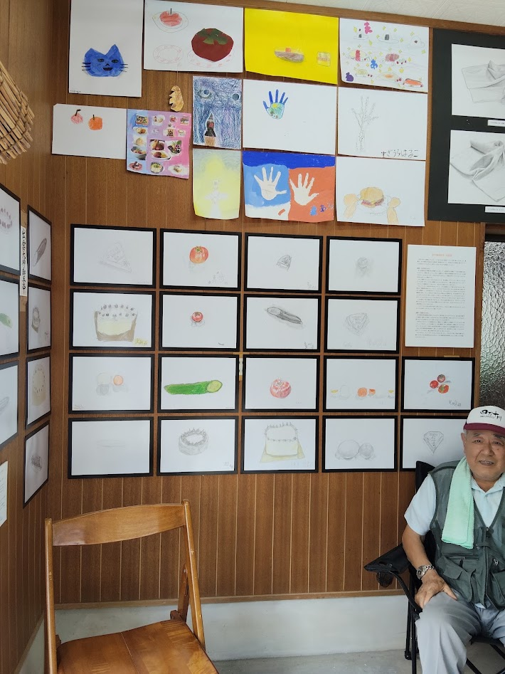
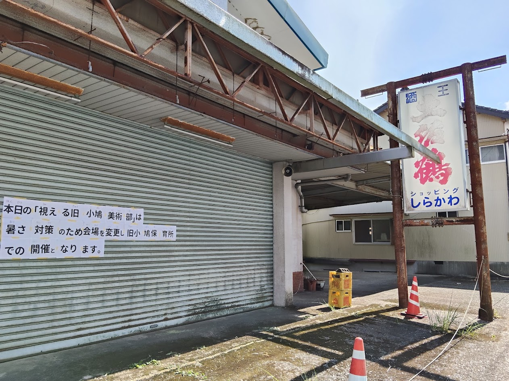
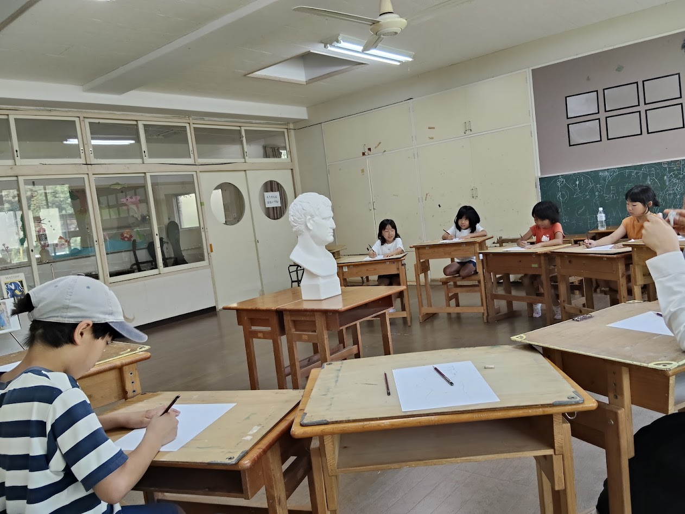
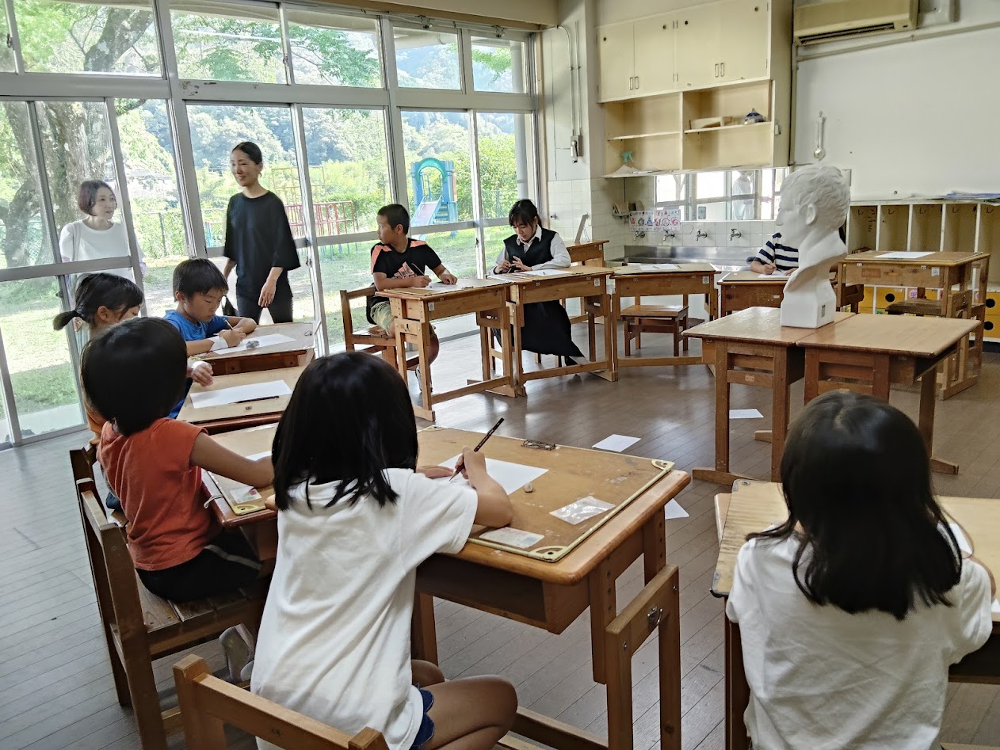
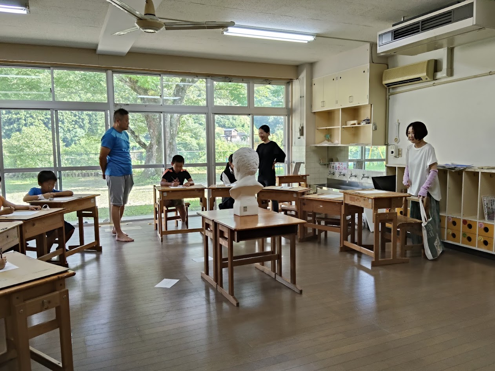
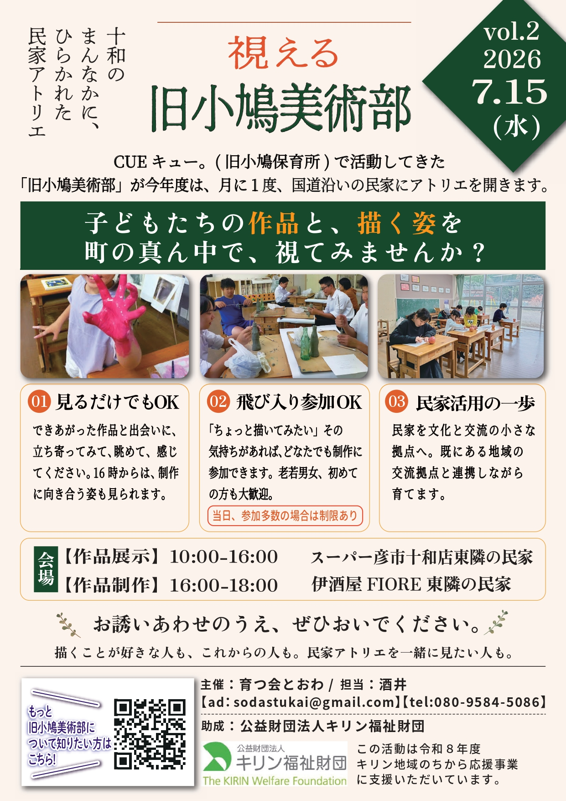

試行錯誤は続く。閉じたシャッターは、まちへの掲示板になる

「視える 旧小鳩美術部」、第2回。第1回のあと、私たちは 10:00〜16:00はM邸で作品を展示し、16:00〜18:00は第二拠点のS邸で制作する——という 二拠点での開催を決めていました。ところがこの日、その計画は当日の暑さによって、 大きく描き替えられることになります。
結果として第2回は、M邸で日中の作品展示を行い、 制作は冷暖房のあるいつもの美術室「CUEキュー。（旧小鳩保育所）」で実施。 その「会場変更」という出来事が、はからずも今後の活動の方向性を照らす一日になりました。
📸 当日の様子
※ 写真はクリック（タップ）で拡大。長いキャプションも、拡大すると全文が読めます。






✍️ この日のながれ
午前10時から午後4時まで、M邸では作品の展示を行いました。 そして午後4時から6時まではCUEキュー。（旧小鳩保育所）へ移り、 作品展示と制作（16:00〜17:00）を実施。今回の第2回から、 「日中に視せる場（M邸）」と「夕方に描く場（CUEキュー。）」が、 時間と場所で分かれるかたちになりました。
この日のモチーフは石膏像。
🔥 いちばんの出来事：暑さと、急な会場変更
開催日より前から、掃除などでS邸には出入りしていました。 ふだんシャッターが下りていて、広さもあるため、それほど暑く感じておらず—— いま思えば、想定が甘かったのです。当日は早めにシャッターを開けてみたものの、 時間とともに気温はどんどん上昇。講師二人で協議した結果、 参加者の安全を第一に、冷暖房のあるいつもの美術室（CUEキュー。）で開催することを決めました。
「2ヶ月の会」さま※注1より寄付いただいたスポットクーラーはM邸では威力を発揮し、 設置する前と比べ格段に過ごしやすくなったものの、 S邸は会場が広すぎるため効かないと判断。想定の甘さからくる苦渋の決断でした。
ただ——S邸に来られる参加者のために、シャッター部分へ大きく 「会場が CUEキュー。になりました」という告知を掲げたところ、 これが想像以上に、道ゆく人や車を運転している方から注目されたのです。 この思いがけない反応が、次の「見えてきた方向性」につながっていきます。
※注1 2ヶ月の会 ── 四万十町大正・十和地域の有志による会。2ヶ月に1度集まり、 地域で支援を必要としている団体や活動の支援を行っています。私たちの活動に賛同いただき、 夏の展示を支えるスポットクーラーを寄付してくださいました。
💭 手応え：新しい参加者と、夜のギャラリー
当日は、新しい大人の参加者が2名。おひとりはじっくりと制作に取り組まれ、 もうおひとりは17時〜18時の制作を希望されていたため、今回は見学のみ。 また、現在は低学年の参加をお断りしている中で、「体験したい」という児童を1名受け入れたところ、 とても集中して制作していました。
開催に先立つ7月10日の「夜のお茶堂」（17:30〜19:00）では、 M邸のギャラリー見学に10名が訪れました。 月に一度ギャラリーが稼働することで「入りやすい場」になってきていること。 さらに、昼間は暑くて出歩けない人・仕事で日中に来られない人にとって、 薄暗い時間帯に、ほのかな灯りから覗くギャラリーという 夜ならではの魅力も、多くの来場につながったようです。
🧭 いちばんの発見：講師より（石膏像を描く）
- やはりCUEキュー。は街道から奥に入っているため静かなのと、窓面が広いので明るくて光がきれいなのと、十分な広さが確保されているため、集中できたように思います。
- 石膏像がモチーフなので、いつものように立ち歩いてぶつかったら破損してしまいます。最初から席を固定して、画材も取りやすいところにセットして、立ち歩かないように初めに注意したことで、いつもより立ち歩きも少なく、結果、集中にもつながったように思います。
- 空調も効いていて、熱中症などの心配もなくて良かったです。
- 石膏像という小学生には難易度の高いモチーフだったけれど、去年からの「よく見て描く」ことを意識した取り組みを経て、見る力がちゃんとついてきていることが、描き上がったものを見てよく分かりました。ここまで描けるとは正直思っていなかったので、驚きました。
- 難しくて嫌になって途中で投げ出すことなく、細部や自分のこだわりたいところを、皆よく見て描き上げていました。今までで一番集中してよく描けた子もいたので驚きました。皆苦労したけれど、何人かは確かな手応えを感じているようで良かったです。
- 新しい参加者が3名（小学2年生と大人2名）。大人の方は考えながらよく見て描いており、楽しめたようで良かったです。小学2年生の子は、最初は見ないで描いていましたが、途中で講師の声かけと周りの子たちの様子を見て、モチーフを見て描くようになり、描き終えるまでよく頑張りました。
- 16時から17時まで描き、17時から18時までは講評などが通常ですが、17時から18時で描きたいという方が来られました。今後は18時まで描けるように、モチーフはセットしておくようにします。
🧱 見えてきた方向性：閉じたシャッターを、まちの掲示板に
今回の会場変更で、思いがけず気づいたことがあります。 制作の現場を、1日限りで無理して「視せる」よりも、 下りたシャッターの面を、大きな告知・共有の場として活用するほうが、 実は訴求効果が大きいのではないか——ということです。
「会場が CUEキュー。になりました」という告知が、道ゆく人の目に留まった。 その事実が、方向性の再検討を促しました。具体的には、次のように考えています。
- ① 制作の現場は、天候に左右されない設備の整ったCUEキュー。を活用する
- ② S邸の大きなシャッターには、「旧小鳩美術部」の活動を宣伝するポスターや 告知ポスターを、一定期間まとめて掲示する
- ③ 1日限りの制作を見せるより、常に「視える」告知面のほうが、 まちへの訴求効果が大きいかもしれない
📣 周知・チラシのこれから
第2回から、十和小・十和中・小鳩保育所でのチラシ配布が始まりました。 ただ今回は、「視える 旧小鳩美術部」と8月21日の特別講座の チラシ2種を夏休み前に配布する都合で、早めの配布ができず—— 学校関係への効果は、いまのところ「周知できた」という段階です。
そこで、配布のタイミングを整えるため、配布〆切を「第2水曜日」に設定することにしました。 また、美術館ポスターの掲示は現在調整中で、 展示用のパネルはロール紙への変更も検討しています。
🌿 まとめと、次回のこと
実際にやってみて、はじめて分かることばかり——試行錯誤は続きます。 第2回は、暑さという想定外から、「描く場」と「視せる場」をどう組み立てるかを、 あらためて場で確かめる一日になりました。
次回、第3回は8月19日（水）。あわせて、 8月21日（金）には「視える 旧小鳩美術部 特別授業」も開催します。 夏の二つの機会に向けて、準備を進めていきます。
🗒 開催のおしらせ（配布チラシ）
